Bienvenido a la Supervivencia
Navega por la wiki usando el menú de la izquierda. Descubre información sobre los infectados, el arsenal de supervivencia y los personajes clave en el mundo de The Last of Us.
 "When you're lost in the darkness, look for the light."
"When you're lost in the darkness, look for the light."
Wiki de Infectados
El hongo Cordyceps tiene múltiples etapas de infección, cada una más peligrosa que la anterior.
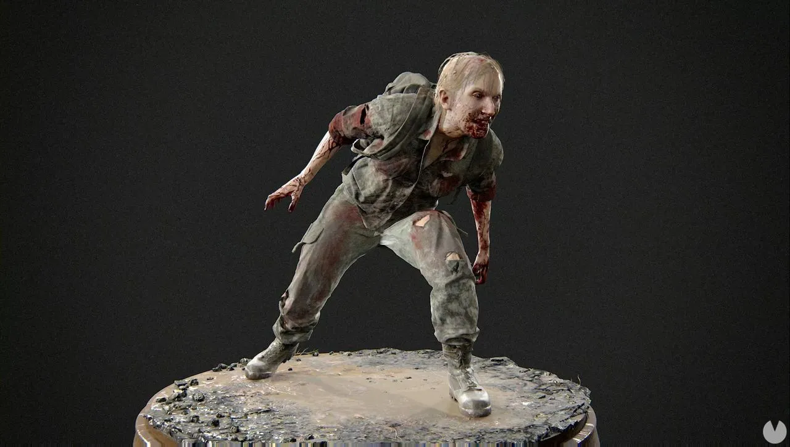
Corredores (Runners)
Descripción: Etapa 1. Recién infectados, aún conservan su humanidad visual pero son increíblemente rápidos y agresivos. Atacan en enjambres.
Cómo matarlos: Son vulnerables a todo. Un buen golpe cuerpo a cuerpo o un disparo bastará. El sigilo es útil para evitar la horda.
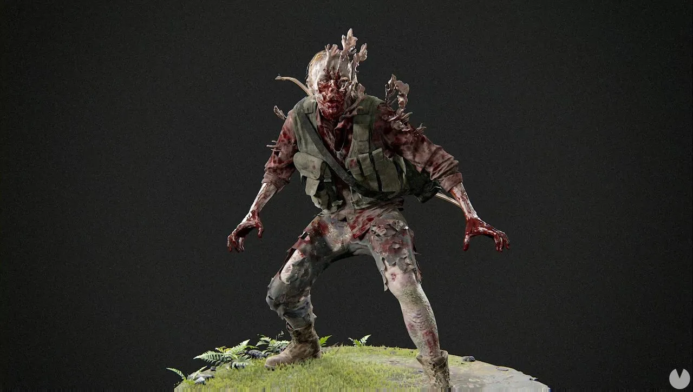
Acechadores (Stalkers)
Descripción: Etapa 2. El hongo comienza a crecer externamente. Son sigilosos, prefieren esconderse, observar y emboscar. Son rápidos y difíciles de rastrear.
Cómo matarlos: Mantente alerta y usa la escucha. No dejes que te flanqueen. Una escopeta a corta distancia es muy eficaz.
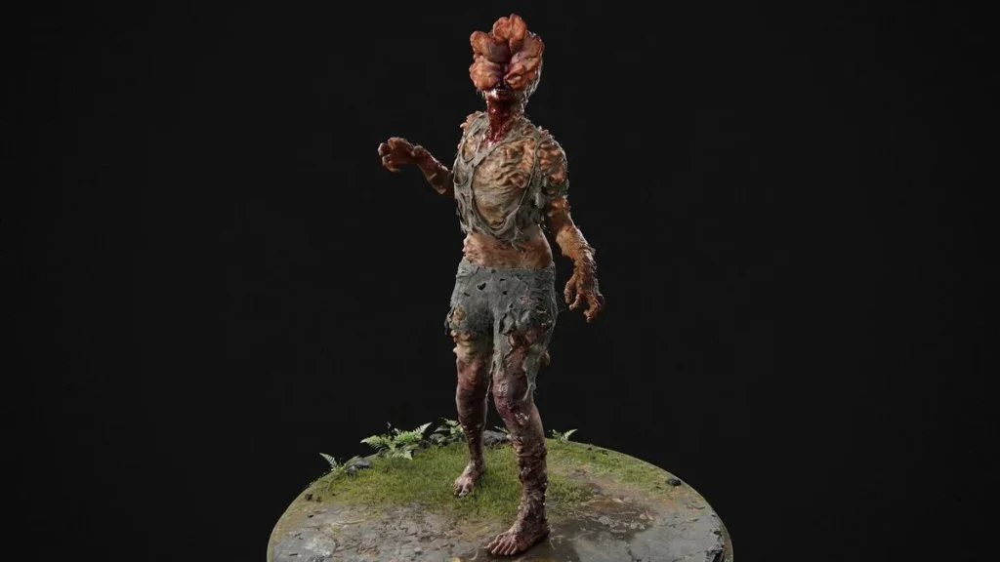
Chasqueadores (Clickers)
Descripción: Etapa 3. El hongo ha cegado al huésped, que ahora usa ecolocalización. Su "clic" es aterrador y letal.
Cómo matarlos: ¡No ataques cuerpo a cuerpo (sin una daga)! Son resistentes. La mejor opción es el sigilo con la daga, una escopeta a quemarropa o un disparo certero a la cabeza con un arma potente.
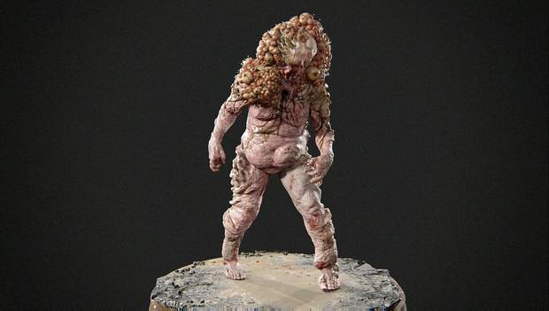
Hinchados (Bloaters)
Descripción: Etapa 4. Años de infección. Son tanques andantes cubiertos de una armadura fúngica. Arrojan bombas de esporas tóxicas.
Cómo matarlos: ¡Fuego! Son débiles al fuego (cócteles molotov, lanzallamas). Usa bombas de clavos y tus armas más potentes. Mantén la distancia.
Arsenal y Mejoras
En este mundo, un arma bien mantenida es tu mejor amiga. Las mejoras se realizan en los bancos de trabajo.
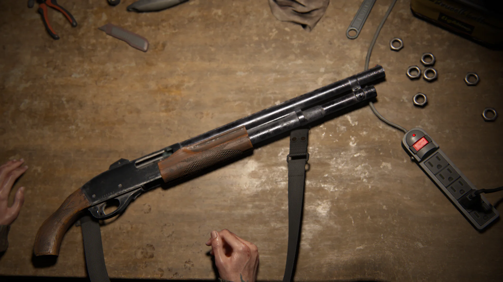
Escopeta de Corredera
Descripción: Devastadora a corta distancia. Perfecta para Chasqueadores o cuando te ves rodeado.
Mejores Mejoras:
- Cadencia de Fuego: Disparar más rápido salva vidas.
- Potencia de Fuego: Para asegurar la muerte de un solo golpe.
- Capacidad: Menos recargas en medio del pánico.
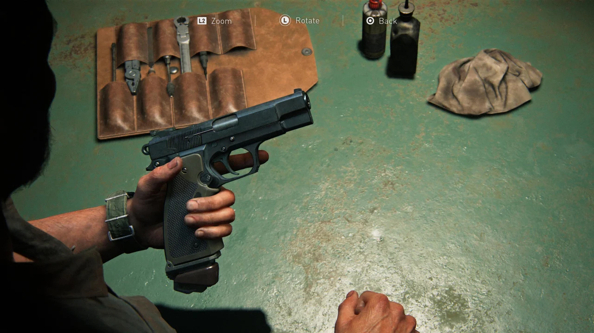
Pistola 9mm
Descripción: El arma básica de supervivencia. Equilibrada pero con poco poder de detención.
Mejores Mejoras:
- Capacidad de Cargador: Esencial para no recargar en pánico.
- Cadencia de Fuego: Disparar más rápido salva vidas.
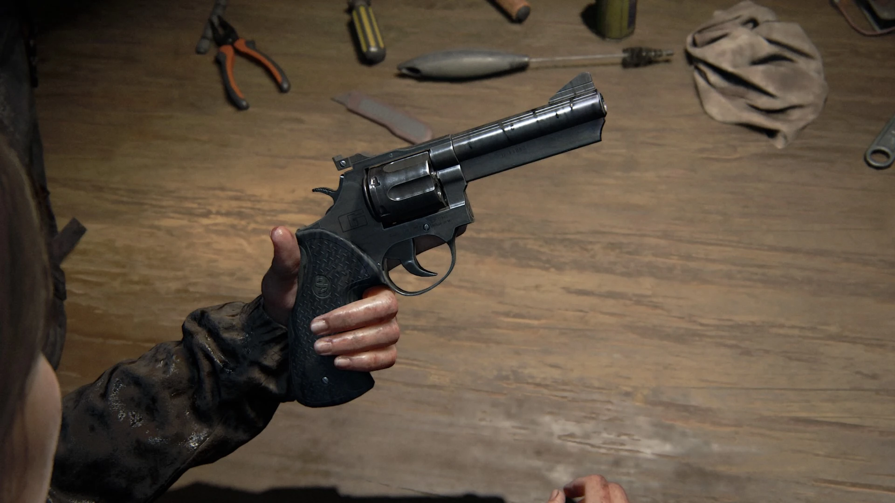
Revólver
Descripción: Lento pero increíblemente potente. Una bala en el lugar correcto puede derribar a casi cualquier cosa.
Mejores Mejoras:
- Potencia de Fuego: Maximiza su ventaja.
- Velocidad de Recarga: Reduce su mayor debilidad.
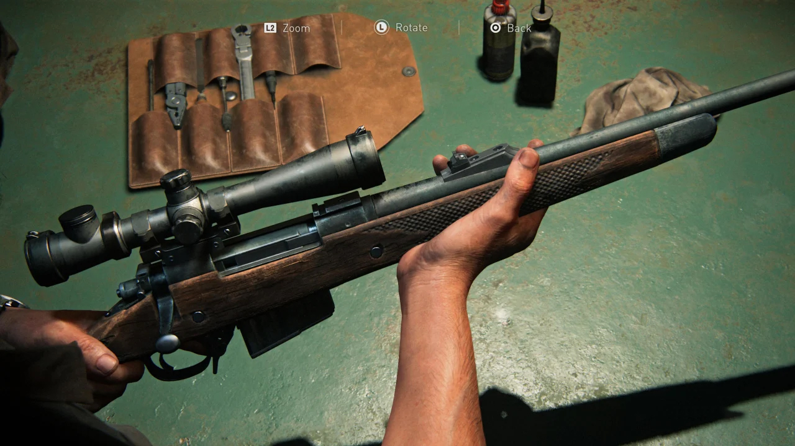
Rifle de Caza
Descripción: El arma de largo alcance. Letal y precisa, ideal para eliminar enemigos a distancia antes de que te detecten.
Mejores Mejoras:
- Mira Telescópica: Imprescindible.
- Potencia de Fuego: Para atravesar blindajes.
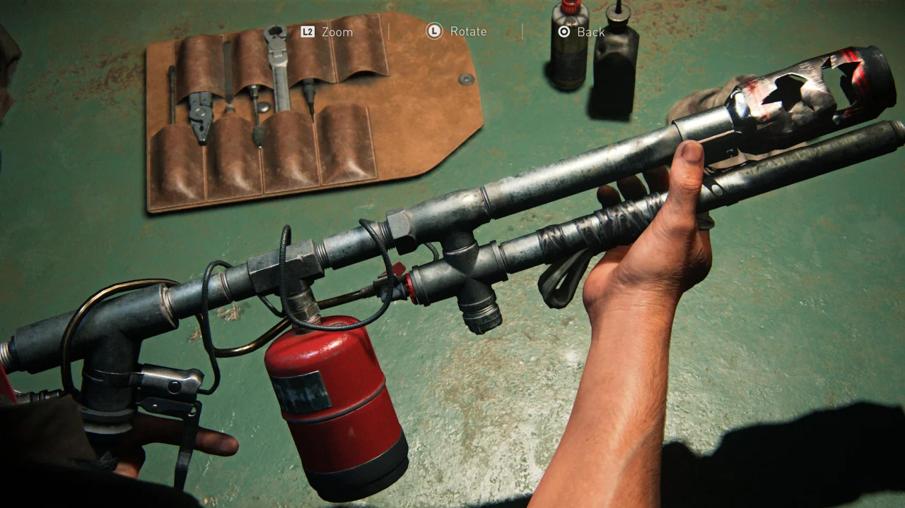
Lanzallamas
Descripción: Arma de control de masas. Quema a múltiples enemigos y es la mejor forma de matar Hinchados (Bloaters).
Mejores Mejoras:
- Alcance: Para mantener el fuego lejos de ti.
- Daño: Quema más rápido.
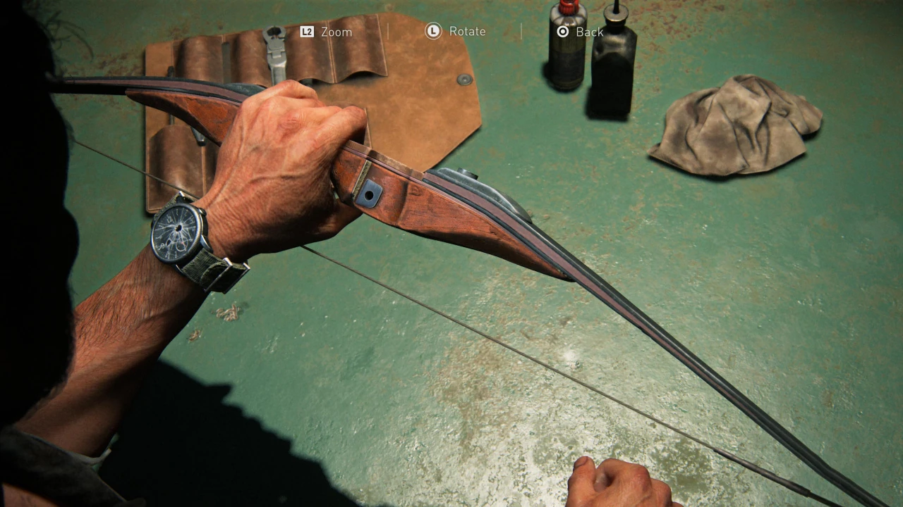
Arco
Descripción: El arma de sigilo definitiva. Las flechas a veces se pueden recuperar. Letal y silencioso.
Mejores Mejoras:
- Alcance: Mejora la precisión a larga distancia.
- Velocidad de tensado: Para preparar el disparo más rápido.
Personajes
Las historias de aquellos que intentan sobrevivir.
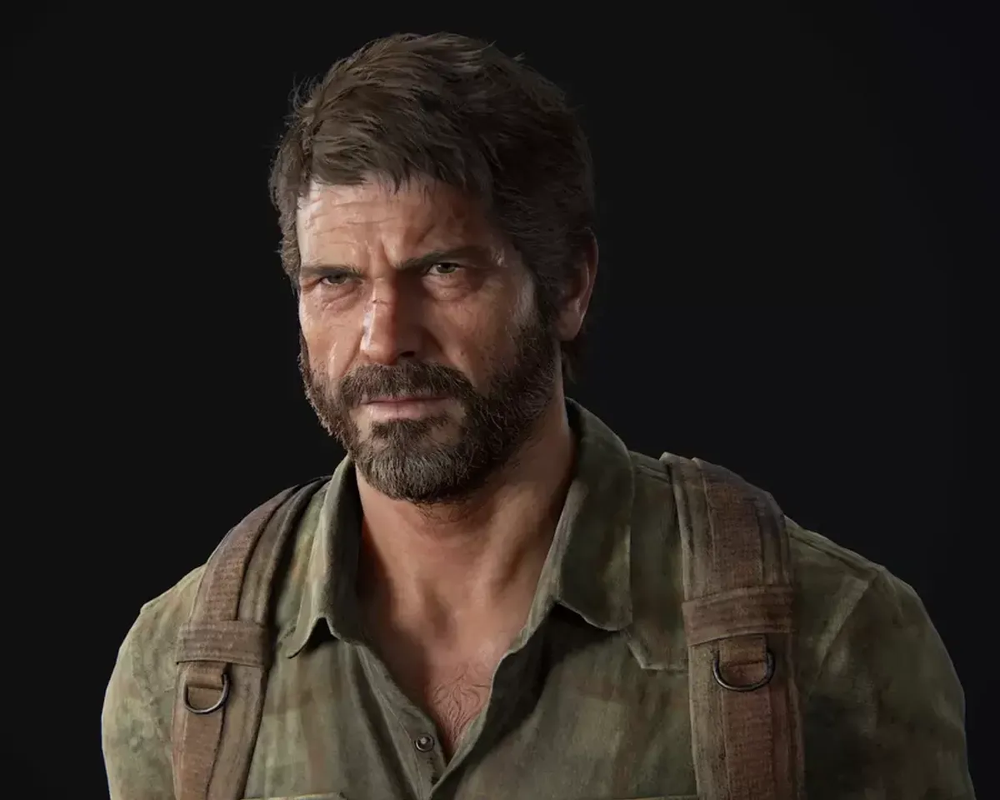
Joel Miller
Un contrabandista endurecido que vive en la Zona de Cuarentena de Boston. La epidemia le arrebató a su hija, convirtiéndolo en un superviviente cínico y despiadado. Su visión del mundo cambia cuando se le encarga escoltar a Ellie, encontrando en ella una nueva razón para luchar y redescubriendo su humanidad.
Ellie Williams
Una huérfana de 14 años valiente y testaruda, nacida después de la pandemia. Es inmune al Cordyceps, lo que la convierte en la posible clave para una cura. Su viaje con Joel la obliga a madurar rápidamente, enfrentando la brutalidad del mundo y forjando un vínculo inquebrantable con su protector.
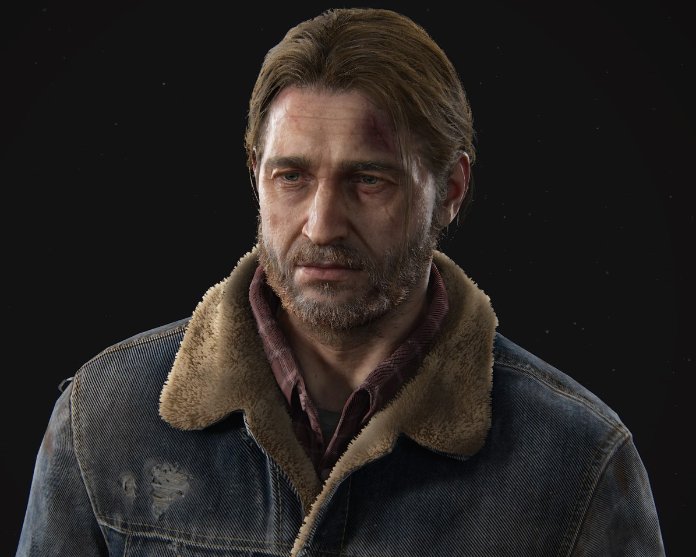
Tommy Miller
El hermano menor de Joel. Un ex-Luciérnaga que, a diferencia de Joel, mantiene su idealismo. Funda el asentamiento próspero de Jackson, Wyoming, y es un pilar moral en la vida de Joel y Ellie.
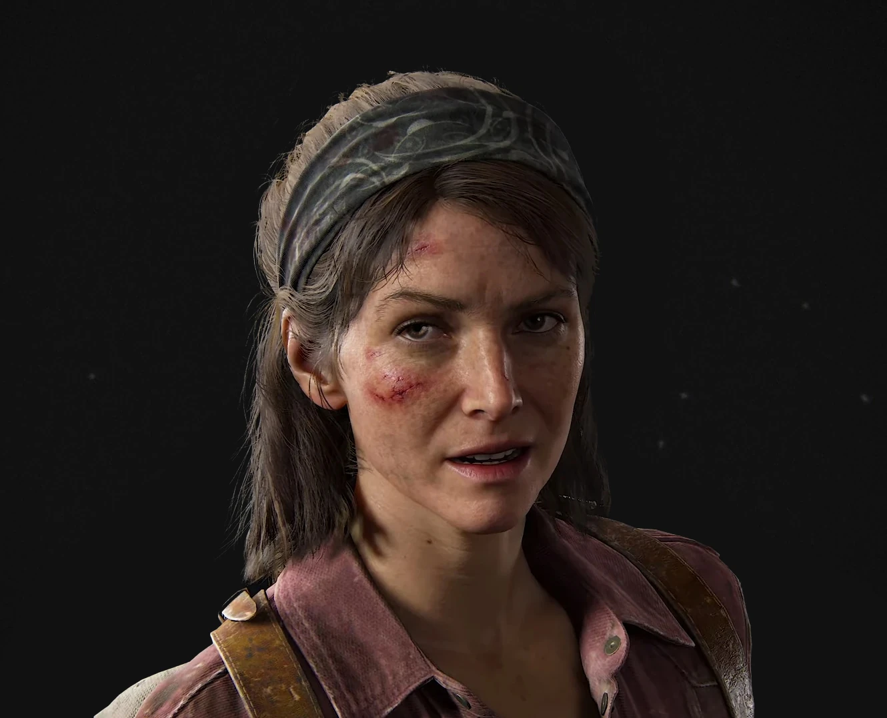
Tess Servopoulos
La compañera de contrabando de Joel en Boston. Pragmática y dura. Es ella quien insiste en completar la misión de llevar a Ellie a las Luciérnagas, sacrificándose al final para darles una oportunidad.
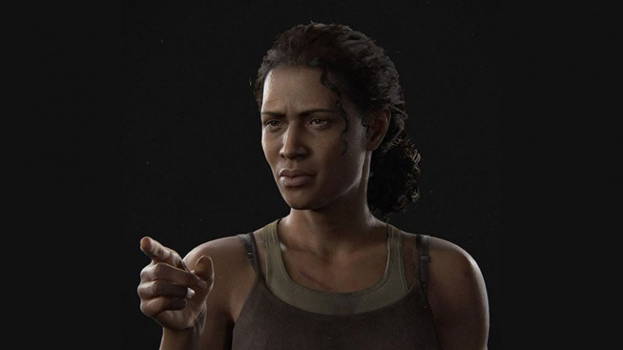
Marlene
La líder de las Luciérnagas. Es quien encarga a Joel y Tess la misión de escoltar a Ellie. Es una líder dispuesta a hacer sacrificios extremos, incluida la vida de Ellie, por la posibilidad de encontrar una cura.
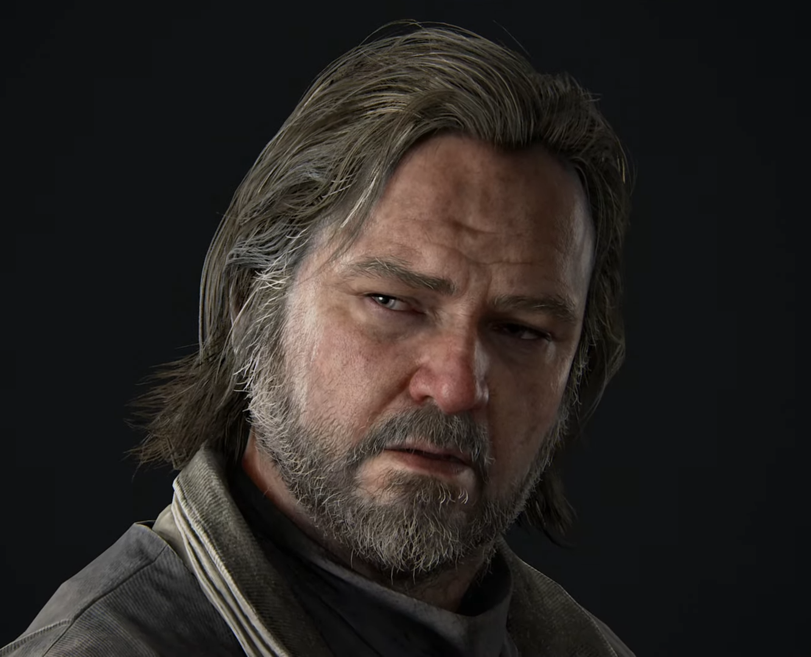
Bill
Un superviviente paranoico y socio comercial de Joel que vive solo en un pueblo lleno de trampas. A regañadientes, ayuda a Joel y Ellie a conseguir un vehículo funcional a cambio de favores pasados.
Resumen de la Historia
La saga de The Last of Us es una narrativa de supervivencia, pérdida y las profundidades de la naturaleza humana.

The Last of Us: Part I
Veinte años después de la pandemia, Joel debe escoltar a Ellie, una adolescente inmune, a través de un EE.UU. devastado. Su misión, encargada por las Luciérnagas, es la última esperanza de la humanidad para una cura. Su viaje brutal forja un vínculo paternal, que culmina cuando Joel elige salvar a Ellie de la muerte segura en el quirófano, condenando al mundo pero salvando el suyo.

The Last of Us: Part II
Cinco años después, la paz de Ellie y Joel en Jackson se rompe. Un acto de violencia brutal desata un ciclo de venganza. Ellie viaja a Seattle para cazar a los responsables, solo para descubrir que sus enemigos tienen sus propias razones. La historia explora el trauma, la empatía y el precio de la venganza, mostrando que no hay héroes, solo supervivientes rotos.